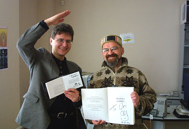

Заппа'zУх!Ой!
русский более или менее регулярный бюллетень для поклонников американского композитора
Frank'а Vincent'а Zappa'ы
Выпуск.34 (25 августа 2001)
Uri 2
С Юрой Балашовым, московским художником, автором обложки альбома Фрэнка Заппы "Civilization, Phaze III" меня познакомил замечательный фотограф Игорь Верещагин зимой 2001 года. Тогда у Юры еще не было e-mail'а и безотказный Игорь, словно пушкинский почтальон, носил депеши от меня к Юре и обратно. Разговор получался интересным, но интервью, как некоторое произведение со своими жанровыми законами не выходило, и мы договорились встретиться.
Дух Фрэнка нам определенно благоволил, потому что именно 14 мая две тысячи первого, когда в Калифорнии еще догорало тринадцатое, самый что ни на есть Mothers Day, я стоял у окна юриной мастерской на Новом Арбате и смотрел на московские крыши.
Юра, необыкновенно приятный, неторопливый и принципиально бритый человек, в невероятной цветастой ермолке, какую я до этого видел только на голове Телониуса Монка, на рисованной обложке какого-то контрафактного сидюка, показывал мне свой город:
- Вот, - говорил он, ладонью очерчивая, организуя знакомое пространство - здесь двор моей юности, там мой дом, тут школа, - я, еще сидя в подвале, еще черте когда, говорил, художник должен творить в мансарде. На последнем этаже.
Я соглашался.
Потом мы обменивались автографами, а Игорь Верещагин нас фотографировал.
Потом пили чай и слушали Everything Is Healing Nicely, который я записал и привез Юре в подарок.
Потом я рассказывал Юре о недавно изданном романе Мун Юнит.
- Знаете, Юра, а ведь дочь изобразила отца художником, автором многочисленных полотен, на которых, правда, красовались исключительно полноразмерные письки во всю ширину холста, но все же художником, не писателем, не актером.
Я, откровенно говоря, просто думал немного польстить симпатичному и гостеприимному человеку, вот, дескать, Заппа родным и близким тоже представлялся ваятелем и живописцем. Однако, эффект моих слов оказался не вполне ожидаемым. Юра замолчал, задумался и вдруг признался:
- Надо же... А ведь у меня была именно такая серия работ. Вульвинизмы. Да... И дочь меня долго не понимала...
Мы посмотрели друг на друга.
- Conceptual Continuity, - пробормотал я. Юра на секретное слово не отреагировал, он просто предложил еще стакан чаю.
- Может быть, EIHN послушаем еще разок, - сказал он, - уж больно музыка хороша.
Я не возражал.
Потом явились его друзья-монголы и пару часов звучали уже степные, военно-полевые песни. Юра самозабвенно играл на удивительной штуковине, похожей на обрезок одеревеневшего хобота какой-то зверюги доисторической эпохи.
Потом он ходил за печеньем и луковыми хлебцами. Опять булькал чай и предлагались папиросы. К разговору о любимом композиторе Юра готовился долго и тщательно. Как космонавт к полету.
Благословенное четырнадцатое стало пятнадцатым, когда мы наконец сели за стол и включили диктофон.

* * *
Владимир Советов: Юра, вы, кажется, второй русский человек после Николая Слонимского, которому довелось не бизнес делать с Фрэнком Заппой, а нечто разумное, доброе, вечное. Как Вы познакомились с ФЗ? Как оказались в Лос-Анджелесе в нужный момент и в нужное время?
Юрий Балашов: Справедливости ради следует заметить, что и Стас Намин делал с ФЗ разумное, доброе, вечное. Насколько я тогда понял из разговоров, свидетелем которых я становился по случаю, они всерьез раздумывали о реконструкции Манежа в Питере, о каких-то спутниках, реформирующих систему коммуникаций в России, о создании Лаборатории Холодного Ядерного Синтеза.
Да, и первый раз, если не ошибаюсь, ФЗ приезжал в Москву по приглашению Музыкального Центра Стаса Намина или СНС. Я работал тогда в СНС художником и по совместительству начальником отдела организованной поддержки инициатив. В 1989 несколько сотрудников СНС, я в том числе, с Наминым во главе, отправилось в США с "коротким визитом". В ЛА Стас привел всех в дом к ФЗ на Вудроу Вилсон драйв. Встретили нас ласково и радушно. Накормили-напоили, провели по всему дому, познакомили с домочадцами. Развлекли беседой. Я тогда совершенно ошарашен был всем, что видел. В целом. Восток Америки. Юг и Запад. И, может быть, важности именно этого события как-то не почувствовал. Просто все было здорово, и это тоже.
А потом, уже в Москве, года 2 спустя, очередное появление ФЗ воспринималось как чудо. Было это зимой. Встречались очень тепло. Пили кофе. Курили сигареты. Говорили обо всем, о животных, погоде, о детях. Фрэнк ведь отец. Четверо детей. Да, четверо. Ахмет, Двизл, Мун и Дива. Хорошие дети.
Потом он снова приехал в Москву летом. Ну, летом вообще все хорошо. И свет падает на человека правильно. На дома - тоже. Москва ему понравилась. И мне летом нравится. Так что при первой возможности я отправился в ЛА, опять же не без участия СНС и Стаса Намина лично.
ВС: Отлично, Юра, краткий конспект по теме: "Встреча и знакомство" у нас, похоже, есть, теперь давайте попробуем, составить что-то вроде хронологии и украсить ее живописными деталями. Итак, вот что у меня получается. Первый раз вы встретились с ФЗ в 1989 в ЛА. Зимой 1991 Фрэнк сам приезжает в Москву. Летом того же года еще раз. Так?
ЮБ: Да, как-будто так.
ВС: И где же он жил в тогдашней холодной и голодной горбачевской Москве?
ЮБ: По-моему он жил в гостинице "Советская", там такие хорошие номера, имперского какого-то стиля, были, просторные, хотя по удобствам и уступали, наверное, тогдашним американским чудесам. Кажется, мы туда несколько раз заезжали, но точно не помню, потому что нахожусь частенько в своем внутреннем мире, в общем, откидываю какие-то подробности до момента концентрации, конечно, так упускаются некоторые моменты и обстоятельства внешние... Да, но Заппа, естественно, был ошарашен тем, что тут все так неустроенно, что так тосклива и тяжела жизнь советских граждан, это же был 1991 год... Он попытался посмотреть, что здесь происходит, понять. А так как человек он наблюдательный и ироничный, у него были поводы поиздеваться над тем, что здесь тогда происходило. Полный идиотизм, грабеж, передел собственности, он все это прекрасно понимал.
ВС: Экономили на всем и в столовых каждую салфетку рачительно разрезали на восемь треугольничков.
ЮБ: Да, было. В буфете Доме молодежи как раз такой артефакт попался Фрэнку на глаза. Он, конечно, очень удивился. Это же надо было, каждую развернуть, разрезать на четыре квадратика, а затем квадратики еще и по диагонали. Что-то вроде эмблемы нищеты в контексте полной невозможности заняться чем-то продуктивным.
Но мне больше всего понравилось, как тогда проявился сарказм и ирония Заппы. Он взял эту вазочку с торчащими из нее бумажными треугольничками и поднял над головой будто такой факел. Настоящая статуя свободы получилась. Очень смешно.
ВС: Действительно. А чем вообще занимался, интересовался Фрэнка, в пору, когда Скорпионы у нас тут принюхивались к wind of changes?
ЮБ: Ну, мы, я имею в виду прежде всего, Намина и его центр, ему устроили полную демонстрацию тогдашнего московского андеграунда. И я во всем этом участвовал, потому что, как уже говорил, работал у Стаса начальником отдела организованной поддержки инициатив, сам себе придумывал должность, я еще тогда не знал термина facilitation, поэтому и составил такое нагромождение слов.
ВС: А отечественные исполнители классической музыки, камерные музыканты его не интересовали. Какие-то проекты с их участием не намечались?
ЮБ: По-моему, его интересовало все, он все разведывал, и получил исчерпывающее представление о предметах его интересовавших. С помощью Стаса, конечно, ведь он же со всеми накоротке, Заппе было достаточно только сказать, поехали туда, пошли туда, а что у вас здесь, и все решалось. Больше Стаса ему никто не мог помочь здесь, в Москве. Да и в Питере они побывали. Тогда и идея появились с этим Манежем. А отдыхал он душой в моей мастерской, это точно.
ВС: Эта та самая, которую он звал Bauhaus?
ЮБ: Да, в центре Стаса Намина было помещение, которое мне отвели под мастерскую, там бывали все музыканты, появлявшиеся в центре Стаса Намина. Это были такие для них happy hours, там они могли чайку попить, по-турецки поговорить. И Заппе там очень нравилось, сама обстановка нравилась, то, что происходит, какая-то тусовка, активность.
ВС: Знаете, Юра, это звучит, по меньшей мере удивительно. Заппа, одержимый трудоголик, занятый делом 25 часов в сутки, вдруг все бросает и просто приезжает в полудикий край, чтоб отдыхать, "кофе пить и по-турецки говорить"?
ЮБ: Он, конечно, отдыхал, но и занимался делами. Мотался в Питер. Искал каких-то там специалистов, которые занимаются спутниковой связью, искал каких-то ученых по части ядерного синтеза, всех их можно, наверное, найти и распросить, о чем они с Заппой тогда говорили. Еще какие-то люди были вовлечены во все это, но главное, что мы ему могли дать информацию о том, что происходит в плане музыкальном, театральном, какие-то показывали перформансы, он записывал все это на видео. Помню, еще расставлял микрофоны по собственной системе, очень переживал за эти микрофоны, потому что когда артисты разошлись, то стали поливать все вокруг какими-то растворами, чем-то опрыскивать, всю эту аппаратура за тысячи долларов.
ВС: С Заппой были звукоинженеры, кто-то ему помогал?
ЮБ: Нет, он все делал сам, он был один, хотя помогать могли и наши звукоинженеры. Был у него какой-то походный магнитофон, точно не помню какой, но все записывалось. А еще интересно, что он не только смотрел и слушал, но давал советы нашим музыкантам. Помню, мы зашли на репетицию группы Николай Коперник Юры Орлова, Заппа взял гитару и показал какой-то прием, который сам недавно изобрел, и решил поделиться, просто подарить, а эти даже не поняли. Юра Орлов, человек такой очень продвинутый, new-wave'овский, совершенно не воспринимал Заппу, который ему казался стариком, а тут какой-то блюзовый пассаж, в общем, совсем не оценил подарка.
ВС: А что-то особо он выделил, что-то особенное ему понравилось?
ЮБ: Я помню точно, что его тогда порадовала группа "Север". Они в то время как раз начинали.
ВС: Хорошо. Вернемся теперь в 1989. Кстати, мне кажется, что Стас побывал у Фрэнка дома даже раньше. Мне смутно припоминается какое-то фото в МК, наверное, 1987 года. Намин у Заппы в гостях, Стас стоит, Заппа сидит, оба с гитарами в руках.
ЮБ: Да, вроде бы так и было.
ВС: Ну, а вас он уже привез в 1989. И вы там ели, пили, и угощались Зинфанделем, так?
ЮБ: Ага, пили белое вино. Но не чтобы напиться, а просто для удовольствия. Да и просто лимонада, кока-колы было сколько угодно. Но главное, было много банок с орехами. А я вообще орехолюб, так что для меня это был праздник. Много-много орехов, самых разных, бразильских, кедровых, в больших стеклянных банках. Ну, а вообще, кухня мне показалась скорее на итальянский манер.
ВС: Мун, кстати, утверждает в своей книге, что мама готовит раз в год, на Рождество.
ЮБ: Ну, там много помощников в доме, друзья, родственники. Дело не в этом, а в какой-то общей приподнятой атмосфере обеденного помещения, как-то оно было замечательно освещено, огромные окна, вечернее небо. Такое специальное помещение, пристройка, вообще, дом мне казался поросшим разными пристройками. Пристройка для Мун, пристройка для Двизила, по-моему, где-то на крыше, все лепятся, лепятся друг к другу, замечательная постройка. Лестница во дворе, а за домом бассейн. Предполагалось, что я его буду расписывать, но как-то до этого не дошло. Из-за болезни у Фрэнка не осталось никакого энтузиазма на этот счет.
ВС: Очень жаль, но продолжаем. В 1992 очередной музыкальный проект Стаса Намина вас вновь приводит в ЛА.
ЮБ: Да, я туда попал в марте 1992. И месяца через два после моего приезда у кого-то из семьи был день рождения` и меня пригласили.
ВС: Через два месяца? В мае? Тогда скорее всего у Ахмета, он родился 15 мая 1974.
ЮБ: Да, да. Кажется, именно у него. Но точно не больше пары месяцев прошло, потому, что я как раз в это время работал над оформлением пластинки Парка Горького. Мы там тогда все вместе жили. У нас была такая замечательная коммуна, несколько человек. А вот какой район, я уже сейчас точно не помню, все дома вокруг были совсем еще новенькими.
ВС: То есть вы были приглашены вместе с участниками Парка? Кажется ФЗ принимал участие каое-то в их раскрутке там, в Штатах?
ЮБ: Он им помогал. Ребята там были давно, а меня они позвали, когда уже готовили к выходу пластинку.
ВС: Слушали ли вы музыку самого ФЗ, справляя день рождение Ахмета?
ЮБ: Конечно. На той памятной вечеринке ФЗ пригласил всех, кто там был в "святая святых". И мы прослушали его последние творения, CPIII в том числе. А в конце вечера, на прощание, ФЗ отвел меня в сторонку и попросил принять участие в оформлении диска, на котором, он это особо подчеркнул, собраны результаты опытов с записью звука, сделанные им и его друзьями за 30 лет. Название: "Цивилизация, Фаза III". Месяца два я ее делал.
ВС: Ага? Кстати, знаете ли Вы, что Фрэнк и сам неплохой художник? Мальчишкой он побеждал на конкурсе детских плакатов, а позднее своими собственными руками делал обложки первых дисков Матерей - Freak Out! и Absolutely Free. Ощущали ли Вы в композиторе собрата по ремеслу?
ЮБ: Да, да, конечно. В доме ФЗ я видел Т-shirts с рисунками и логотипами Фрэнка. Мне вообще всегда они нравились, Заппины изошуточки, обложки его дисков. Его пластилиновый мультик. Он не неплохой мне кажется, а очень даже хороший художник. Его дом - тоже тому подтверждение.
ВС: Дом, наверное. А вот пластилиновые мультики - это работа Брюса Бикфорда. Вы, Юра, просто Заппу очень любите и по-доброте душевной приписываете ему какие-то дополнительные, симпатичные лично вам таланты.
ЮБ: Ну, нет, я не приписываю это заппиным рукам. Просто человек это делал для него. Заппа выбрал именно этого человека. Художников-то тьма-тьмущая, каждый что-то хочет делать, а Фрэнк выбирал нечто совершенно конкретное. Значит это он, это его художественный продукт.
ВС: Любопытно, что не так давно Гэйл высказалась в подобном духе и в отличие от вас это многих, особенно художников, обидело. Возможно, перефразируя Булгакова, можно сказать, что просто вопрос копирайта немного испортил американцев. Ладно, итак, совершенно неожиданно Фрэнк Заппа предложил вам сделать обложку своего последнего альбома. Как выглядела дальнейшая работа? Вы слушали музыку, читали тексты, приносили эскизы, уходил с правками, снова возвращались? Или может быть прямо у Фрэнка в студии что-то набрасывали в четыре руки, а потом уже додумывали, дорисовывали дома?
ЮБ: Мы ничего не набрасывали. Один только раз он высказал свои соображения на эту тему. Два раза я приезжал к нему с эскизами. В первый раз мы уточнили сюжет. Во второй - Фрэнк одобрил работу. И расплатился.
ВС: То есть было просто напутственное слово перед самостоятельным плаванием, и что же вам сказал Фрэнк?
ЮБ: Ну, началось с того, что Фрэнк попросил меня как-то особо отнестись к этой работе, потому что это его последняя уже работа в жизни. Он мне сказал, что смертельно болен. Я, в принципе, знал об этом, хотя как-то надеялся на лучшее, слышал, знал, что в Штатах часто удается с такой формой рака справиться. Но, видимо, Фрэнку с этим не повезло, он это чувствовал, поэтому и попросил каким-то образом передать в оформлении образ могильного холмика. И тогда у меня родился такой утешительный вариант этой темы. Я подумал, что возможно тут еще такая терапевтическая роль мне была отведена в этом деле. В общем, я решил сделать такой подбодрун, напоминание о том, банальном, что известно каждому человеку, верящему в загробную жизнь, что есть еще какие-то дальнейшие приключения, превращения, что жизнь продолжается и вот символ этого египтяне.
ВС: Ага? Вот откуда вся эта ассирийско-вавилонская экзотика на задней стороне обложки, которая, на самом деле, не слишком вяжется с более чем современными обитателями фортепиано, всерьез озабоченных проблемой putting a motor in themself?
ЮБ: Да, она сделана по типу росписей в египетских пирамидах, там, где были запечатлены семейства фараонов во время какой-нибудь охоты на нильских крокодилов. Здесь все с микрофонами, кругом провода, все слушают что, где и как звучит, провода свиты в такие петли, которые присущи знаковой системе Египта, все это напоминание о вечности и бесконечности. Заппа тут как фараон, и сама ситуация, как бы, зеркальная, он из одного мира в другой передает бесконечный свой провод, на котором все подвешено..
ВС: И вдруг абсолютно американский, повседневный мотив. Эти фламинго? Откуда? Вспомнили Thing-Fish? Или все-таки великая, подсознательно воспринимаемая вибрация великой ноты Заппиной Conceptual Continuity?
ЮБ: Трудно сказать. О Thing-Fish точно не думал. Я просто искал какой-то объект, который бы о говорил предмете. Это же музыкальный инструмент, только он сильно трансформирован, поэтому надо было вводить какие-то элементы, напоминающие о том, что это все-таки музыкальный инструмент. И вот появились эти подставки для струн, такие, которые бывают на скрипках, знак, музыкальная родинка, что ли. Изобразил же я их в виде птичек фламинго чисто ассоциативно, Египет, Нил и все такое... А потом уже Гэйл удивилась, откуда ты знаешь подробности быта итальянцев в Америке, которые так любят ставить у себя во дворах подобных розовых фламинго...
ВС: Здорово! Но попробуем все-таки вернуться к сюжету Цивилизации. Интересно вот что. Центральными персонажами произведения, помимо людей, прячущихся в фортепиано, являются свиньи и пони (pigs and ponies), они танцуют по всякому поводу, превращаются друг в друга, салютуют дыму, удивляют музыкой и, вообще, правят миром, почему у вас нигде нет ни одного хвоста или пятачка? Либретто Заппа почитать давал?
ЮБ: Нет, текст он не показывал, а я и не очень вникал, больше слушал музыку, но Заппа мне пересказывал саму идею о том, что люди живут внутри фортепиано.
ВС: А какой смысл в угрюмых металлических жуках?
ЮБ: Жуки - это скарабеи, только они сделаны в виде jukebox'ов.
ВС: Мне они больше напоминают космические корабли.
ЮБ: Но это и есть космические корабли, только они стилизованы в виде жуков, которые облетают эту Джамолунгму и смотрят, что там происходит на давно оставленной, покинутой территории.
ВС: Это какая-то ассоциации с Joe's Garage и Central Scrutinizer'ом.
ЮБ: Нет, тут главное вершина, самая высокая в мире гора, на самом деле, это фотографически точное изображение Джамолунгмы, вершины творчества, наивысшее достижение Заппы. И, кстати, эти лесенки, еще один из древних символов человечества, это и в буддизме есть, и в христианстве. Символ прогресса, роста, эволюции, но они не ведут туда, на эту вершину. Сплошные лестницы вокруг этого фортепиано, поросшего ракушечником, всякими постройками псведоклассическими, похожими на классические, везде лестницы, но все под отрицательным углом. То есть, войти туда, даже с этой горы, даже поднявшись на самую вершину рояля невозможно, потому что внутри огонь, там пламя, и это то все, что видно со стороны.
ВС: Юра, и всю эту идейно-мировоззренческую концепцию с горой на первой стороне и с египтянами на второй, вы также подробно излагали ФЗ?
ЮБ: Ну да, естественно, хотя про египтян точно не помню, но скорее всего как-то упоминал в разговоре, хотя нет, вторую сторону просто сразу показал, а концепцию первой мы обсудили, во всяком случае, в общих чертах, основные элементы. То есть, Фрэнку и мне хотелось иметь какую-то гору и на вершине ее рояль, где-то после, наверное, второго обсуждения как-то к этому мы подошли. В общем, Фрэнк, конечно, приблизительно знал, что будет нарисовано.
Кстати, здесь деталь есть одна. Тут на заборе, на уступе горы забор, и, если в лупу посмотреть, то можно прочитать Viva Zappa. И тут же рядом есть еще одна деталь, которую тоже можно в лупу разглядеть. Я там человека поставил, Kevin'а Toller'а, один San Diego'ский персонаж, который мне очень помог в создании этой картинки. Когда я придумал, что там должен быть рояль, он меня повез по разным салонам, торгующих музыкальными инструментами, набрали мы каких-то проспектов производителей роялей, он же мне дал возможность работать за его компьютером у него дома, мы много курили травы, неделю это продолжалось и все это он обеспечивал, так что я, естественно, пообещал его старания как-то увековечить.
ВС: Кстати, а как-вы, вообще, понимали ФЗ? Насколько хорошо вы знали тогда в 1992 английский язык вообще и в частности воспринимали американскую пулеметную скороговорку?
ЮБ: Знал я, конечно, не очень много. Что-то успевал понять, а что-то ускользало. Если честно, то частенько ощущение было такое, будто я живу в мультике, нахожусь среди персонажей Duckmen'а.
ВС: Кстати, ведь вот что любопытно, практически в одно и то же время с вами обложку для предпоследнего, так сказать, альбома The Lost Episodes делал венгр, создатель Duckmen'а Gabor Csupo. Вы его не встречали?
ЮБ: Нет, к сожалению. А, вообще, мне очень нравился Duckmen, только, я думал, что это плод фантазии Двизила и Ахмета.
ВС: Нет, Ксупо придумал, а Гренинг уговорили Двизила стать Ajax'ом. Ну, а когда сам Фрэнк согласился еще и музыкальную тему подарить, Габор был на седьмом небе от счастья.
ЮБ: Могу себе представить.
ВС: Я тоже. Однако, вот, что хотел все же заметить в связи с работой Ксупо и вашей. Эстетика CPIII принципиально отлична от эстетики TLE. Если у второго вполне типичная запповская обложка a la Кальвин Шенкл, то ваша скорее подошла бы какой-нибудь укорененной в британской тьме веков банде, вроде King Creemson или Pink Floyd? Фрэнк традиционно черпал вдохновение в живом навозе повседневного американского быта, его культуре и эстетике. Чем вы это разительное несходство могли бы объяснить? Я понимаю, время-то было невеселое у ФЗ, но оно было таким же и для Ксупо?
ЮБ: По поводу эстетики могу только удивляться вместе с вами, почему ФЗ согласился именно с таким решением. Время экспериментировать еще было. Но ему почему-то сразу понравился этот вариант. Его жене тоже.
ВС: Гейл? Вот как? Она принимала участие в обсуждении концепции?
ЮБ: Она не обсуждала эстетическую сторону. Она была не против этой работы, как финансист. Как человек, который отвечал за то, чтобы вовремя был выплачен гонорар. Фрэнк просто спросил ее, тебе нравится, и она ответила, да, нравится. А на вопрос, что ты там видишь, просто сказала, ну, красиво, и еще что-то такое... и тогда Фрэнк говорит, а ты не видишь там на вершине рояль, и она тут же спохватившись, ах, да, теперь вижу... Было это в студии. Она просто зашла, там еще сидели два высоколобых, яйцеголовых персонажа, которые обычно возились с каким-то страшным компьютером.
ВС: Yvega? Neskin? Chrislu?
ЮБ: Да, наверное, эти люди. Имен я не запомнил. Там, вообще, просто полчище домочадцев, и дети, и какие-то служанки в этом доме, и те, кто помогает в записи, буря имен...
ВС: Да и голоса многих можно услышать во второй части CPIII. Помнится, когда я увидел ваше имя среди соавторов, был ужасно огорчен и раздосадован, что вот был же рядом русский человек и не дали ему слова, не загнали под рояль. И немцы там пошептались, и турки, и французы, даже итальянцы, а наш великий и могучий не аукнулся. По моим подсчетам получается, что первый раз со Стасом Вы приехали на годик с небольшим раньше этих записей, а уже сами ровно на годик опоздали. Такая обидная вилка.
ЮБ: Да? А я так понял, что все голоса были записаны еще в 60е . И турки, и прочие. В любом случае, все произведение - это отчет о достижениях в эволюции. От наших до новой классики. Я со своим могучим и великим в любом случае появился на 30 почти лет позже, чем нужно было. Общая для русских ситуация.
ВС: Пожалуй, а кто вам больше всего запомнился из Запп?
ЮБ: Мне запомнились все из ФЗ family. И Гейл - его жена, радостная красавица, славная толстушка, полная жизненных сил, дочь Мун - оригинальная артистка, поет, рисует, шьет. Делает кукол. Сын Ахмет. Упустил, чем занимается. Ну, песни поет. Изучает мультипликацию. Двизл тоже поет, играет на гитаре, имеет какое-то отношение к мультикам. Был, кстати, нашим гидом по Universal Studio в 1989. Я там еще маску купил. Собачий нос.
Вс: Собачий нос? Ну вот, а еще говорите, что концептуальному ритму ФЗ вселенной неподвластны. Нос-то длинный?
ЮБ: Удобный, на любое лицо садился. Я в нем к матери ФЗ явился.
ВС: А Вы были у Роз-Мари?
ЮБ: Да, в 1989. ФЗ просто повез показать нас, русских, своей маме. Что-то мы там вкусное ели. Пирожки. А я до этого в Юниверсал студии купил такой собачий нос, который подходит буквально к любой физиономии, прямо настоящий, я нацепил его и так вошел в дом. Она, конечно, очень удивилась, а я ее успокоил, ничего страшного, просто русские пришли. Заппе шутка очень понравилась.
ВС: Естественно, это в его вкусе. Кстати, ни братьев, ни сестры Фрэнка в тот момент в доме не было?
ЮБ: Нет.
ВС: Понятно, ну, а чек за работу вам выдала Гэйл? Маленькая и симпатичная помощница высокого Фрэнка.
ЮБ: Главное, очень приветливая. И, кстати, мне она маленькой не показалась. Такая, вообще, крупная. Не знаю, так мне показалось, может быть, потому что я сам в Америке совершенно исхудал. И, кстати, Заппа мне не показался таким уж высоким. Может быть его уже согнула болезнь. Худым, да. Вообще же, больше всего в нем поражал язык. Просто по-моему шекспировский.
ВС: Это точно, словарный запас у него и огромный, и необычный. Признак, вообще говоря, много читающего человека. Вот только Фрэнк с удивительным постоянством повторял, что не любит это скучное занятие - листание страниц.
ЮБ: Да нет, наверняка он читал. Хотя книг я вокруг не заметил, но так везде, в домах там книг нет, как-то они этого не показывают, но вообще, начитаны, а уж что касается своей специальности, обычно исследуют и знают все. Заппа наверняка бесконечно много слушал, фонотека у него просто громадная.
ВС: Кстати, по поводу шекспировкого словарного запаса. Слово fuck-то часто звучало?
ЮБ: Ни, Боже упаси. В частной жизни я ни разу не слышал. У него просто было много всяких прикольных слов, каких-то своих неологизмов.
ВС: Ну, это от любви к doo-wop'у. The sweet words of pismotology прочно усвоенные с детства.
ЮБ: Кстати, о любви и sweet words. Думаю, что отношения у них в семье не были простыми, очень уж разные характеры у всех, но мне показалось, что все они преклоняются перед Фрэнком. Глубоко уважают его. И он присутствовал в каждом из них, проявлялся таким ироничным отношением к самим себе.
ВС: Наверное. То есть несомненно. Кстати, как все-таки Мун угадала эти ваши "вульвинизмы"? Вы ей случайно не рассказывали, не показывали?
ЮБ: Как она угадала, я не знаю. Но я ей-то точно никогда этого не рассказывал. Все это я делал там, в Америке. На самом деле, там находишься в такой ситуации, когда обстоятельства от тебя требуют какого-то entrechat, буквально прыжка через голову. Я подумал, проанализировал ситуацию, посмотрел что к чему, какие тенденции, и меня заинтересовала тема татуировок и всеобщая какая-то эротомания. Все вокруг мне казались просто подвинутыми на спорте и сексе. Возможно как-то близость Мексики влияет, и море горячей африканской крови везде, поэтому, думаю, такое цветение порнухи во весь рост. Я-то сам к этому вполне равнодушен. А люди рядом просто бесятся. Такой контраст. Я там, надо сказать, просто целибатствовал, и это давало свои результаты, хотя там было множество таких симпатичных американок, приятных, которые бы могли разделить со мной досуг во всех смыслах, отличные все персонажи, одаренные, интересные, и я просто затеял эту серию, чтобы и их как-то посмешить, своих друзей развлечь и самому несколько покуражиться над тем, что происходит в обществе и стал делать эти гиперреалистические влагалища, покрывать их татуировками до неузнаваемости и получал такие гибриды, которые могут совершенно невинно висеть в какой-нибудь кухне, и ребенок, завтракая перед школой, может сидеть медитировать перед этой картиной, совершенно не подозревая о том, что же там изображено, но по мере роста, созревания начинает понимать, в чем суть, но воспринимает это уже скорее философски.
ВС: А как вообще повлияла на вас встреча и работа с Заппой? Что изменилось, добавилось в душевном устройстве?
ЮБ: Да, мне кажется, что он очень сильно на меня повлиял, до встречи с ним я никогда не мечтал так увлечься музыкой, чтобы самому самостоятельно ее делать. Но потом, после знакомства с ним, после его уже смерти, после такого мистического момента, когда он прямо явился ко мне, у меня ведь бывают видения, их немного было, может быть, несколько в моей жизни, но таких важных, и вот одно из видений было как раз явление Заппы, и меня он попросил, поскольку я в материальном теле, выпить за него чашечку кофе, который он очень любил, и выкурить сигарету. Winston'а у меня, правда, не было, но я схватил Drum и выкурил специально для него, и получил полное удовольствие от самой мысли, что и ему сделал приятное.
ВС: Это случилось там же, в ЛА?
ЮБ: Нет, это было в Сан-Диего. Я там, надо сказать, вообще, жил в совершенно удивительном месте, на холме под небесами. Невероятное место, названное индейцами, которые там жили, Небеса, высочайшее небо, прямо видна его сферичность. И вот там, в этом месте, у нас контакт состоялся. Потом у меня еще было одно очень приятное ощущения, как-будто бы я услышал в какое-то мгновение мировую гармонию и после этого я уже сам увлекся музицированием.
ВС: Я думаю, это замечательно, как часть Заппиной космогонии Одной Большой Ноты, во всяком случае. Кстати, все хотел спросить, акулу-то желтую у Фрэнка в доме видели?
ЮБ: Наверное что-то такое висело где-то на стене, но точно не помню. Хорошо помню вход в студию, она вся внутри темно-зеленая, как подводная лодка, и там лежала все время на пороге его собака. Такая старая, ее особо старались не беспокоить. А вот как звали ее, не помню. У него потом была еще пара собак, уже в 1992, лайки такие, очень красивые, крупные. Есть фотографии. Особенно много я, правда, в первый приезд снимал. У меня был такой простой аппарат-автомат, 32 кадра. Помню сфотографировал во дворе дома бюст Бетховена и рядом еще одна не очень почтительная скульптурка, из гипса с отбитым носом, какого-то популярного американского бейсболиста.
ВС: А что еще было на стенах в доме?
ЮБ: На стенах какие-то риснуки домашних, наверное, друзей каких-то... Дом вообще организован, как художественное произведение. Помню, однажды пошел и заблудился, плутал, спускался, поднимался по всем этим лесенкам, какие-то встречаются китаянки, друзья, людей в доме вообще полным-полно, даже в будни, и вдруг попадаю в совершенно черную комнату, и там аквариумы светятся, даже не комната, а такой угол коридора. Красота!
ВС: Надо же. И в этом райском уголке Фрэнк мечтал смонтировать руками сумасшедших русских физиков лабораторию Холодного ядерного синтеза?
ЮБ: Звучит диковато, но это так. Он сам об этом говорил и не один раз в Москве.
ВС: Я думаю, наверное, это от того, что в его душе до самого последнего дня не унимался озорной пыл малолетнего химика, дух юного экспериментатора и взрывника. Не дали ему тогда в школе в Сан-Диего насладиться фейерверком по полной программе, так он взрослым дядькой думал...
ЮБ: Смешная шутка, мне только кажется, что вся жизнь Фрэнка и без этого оказалась сплошным фейерверком открытий, идей, изобретений...
ВС: Конечно, конечно, и вдвойне приятно, что и ваши искры славно сверкнули в этом фонтане огня. Что Вы чувствовали, когда получилось? Шли по ночному Голливуду, танцевали и пели?
ЮБ: Нет, не пел, просто вышел из дома Фрэнка на эту улочку, нашел какое-то местечко прямо рядом с домом, там, где машины паркуются перед гаражом, сел и стал поджидать своего дружка, который должен был за мной заскочить, хороший, тоже ЛА персонаж, режиссер, русских кровей, ассимилировавший, по-настоящему американец, в лучшем смысле этого слова, Виктор Гинзбург, и вот он подъехал забрать меня, а пока я поджидал его, может быть, минут пятнадцать, сел на какую-то приступочку, закурил, подумал о том, о сем, и тут вдруг сообразил, дошло, что вроде бы какой-то этап жизни завершился, работа сделана. И не просто работа, а работа-то Фрэнку Заппе сделана, и вот он ее только что принял, это же, вообще, что-то, невероятное, удача. Счастье.
* * *
Какое-то время мы оба молчали. Звукочувствительное устройство диктофон перестало накручивать ленту. Кажется, интервью получилось.
- Еще чайку? - предложил Юра.
- Давайте, пожалуй, на посошок, - ответил я.
Заснувшая уже было вода закипала как-то особенно неохотно. На углу юриного стола белел толстенный томик статей Василия Кандинского об искусстве. Я раскрыл его наугад. "Schoenberg's Pictures" немедленно подмигнул заголовок. Ну, надо же, не что-нибудь, а именно рецензия на книгу о кумире самого ФЗ. "Die Bilder" Arnold Schoenberg Mit Bietragen von Alban Berg.
Я повернул раскрытый томик к Юре.
- Как вы это называли? - спросил он c легким изумлением, - Кажется, концептуальное постоянство?
- Да, - подтвердил я, - Conceptual Continuity - всеобщая и неразрывная связь идей и предметов во вселенной Фрэнка Заппы.
Искренне Ваш, Владимир Советов
http://www.arf.ru/
Фото © Игорь Верещагин, 2001
| Домой | Заппа'zУх!Ой! | Поиск | Хозяин |